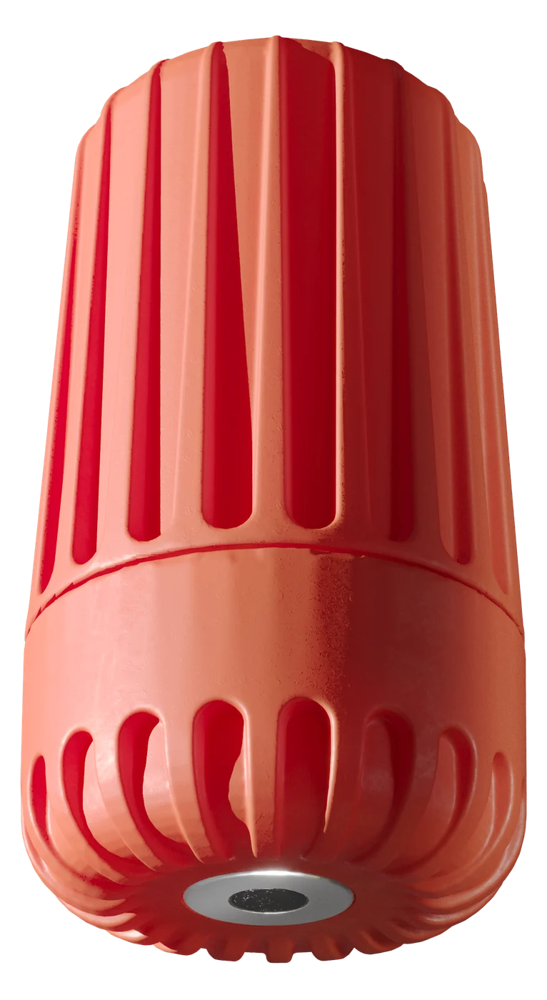
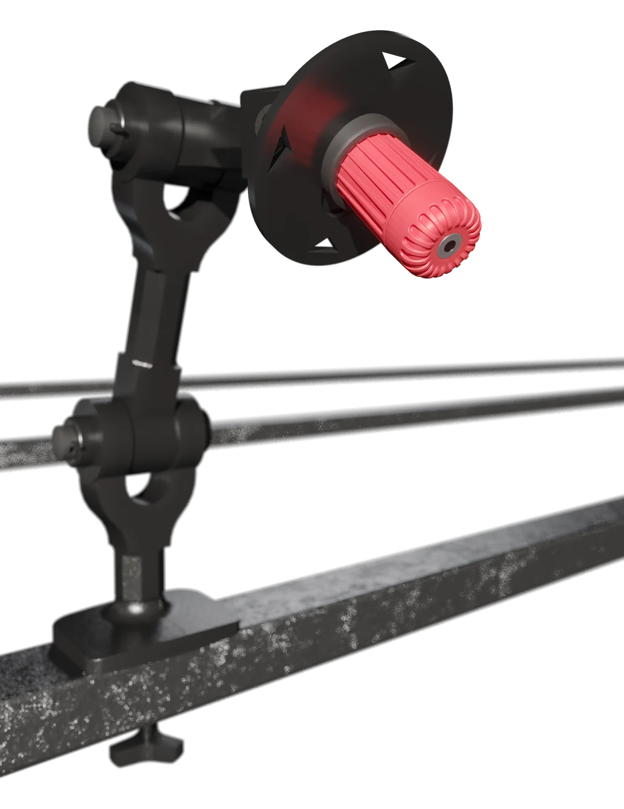
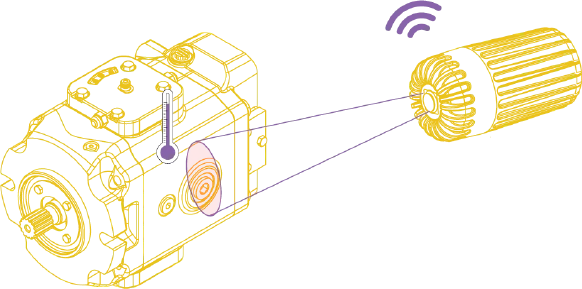

SNIT wireless infrared sensor
Surface temperature without contact.
Point the 5° field of view at a joint, busbar, bearing or pipe. SNIT trends the surface temperature of live and moving parts, measures the ambient temperature alongside, and runs for up to ten years on its battery.

Specifications
| Measured values | Infrared surface temperature, ambient temperature, battery voltage, signal strength |
|---|---|
| Infrared range and accuracy | 0–300 °C; ±3 °C; 5° field of view |
| Ambient temperature | −35 to +85 °C; ±0.1 °C |
| Housing | IP68, adjustable mounting bracket |
| Battery and radio | Lithium, up to 10 years; 868 MHz to the SNGW04 gateway |
| Alarm logic | Absolute limit; rise above the 30-day baseline; difference between phases |
| Emissivity | Painted and oxidised surfaces read directly; bare metal via a matt target strip |
| Price | € 112 per sensor, end-user price excl. VAT |

Aiming the sensor
The measuring spot is about 8.7 % of the distance: at 1 m the sensor averages the temperature over a spot of 8.7 cm. Mount it close enough that the spot sits inside the part you want to watch, and keep the optical path clear of covers and cable loom.
Painted, oxidised and non-metallic surfaces are read directly. A bare, shiny metal surface reflects its surroundings; a small strip of matt tape on the part gives a stable target.
Three ways to alarm
An absolute limit catches a hot joint outright. A rise above the sensor's own 30-day baseline catches slow deterioration before the limit is reached. The difference between phases catches an unbalanced or loosening connection that heats one busbar more than its neighbours. Each alarm is sent by SMS, e-mail or push notification.

Where it is used
- Low- and medium-voltage switchgear and busbars (VdS 2858, DGUV V3)
- Motors and bearings on production lines
- Pipelines and district heating
- Transformer rooms
Ten infrared points in one package.
The Industrial IR 10 package combines one 4G gateway, ten SNIT infrared sensors and five SNTH sensors for the ambient reference, for € 2,032 excl. VAT plus € 40 per month for the software.
- Phone
- +359 888 920 108
- info@sitech.consulting
- Office
- 66B Manastirski Livadi Street, 1404 Sofia, Bulgaria